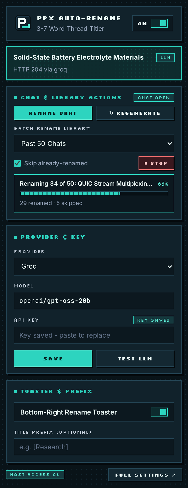

FREE & LOCAL SETUP: GROQ, GEMINI, OLLAMA & OFFLINE MODE
Generating a 3–7 word thread title uses fewer than 500 input tokens per new search—meaning you can run Auto-Rename for Perplexity completely free using Groq, Gemini, OpenRouter free models, local Ollama, or the built-in zero-key heuristic.
Auto-Rename for Perplexity works for $0/month in four ways: (1) Zero-key Offline Mode works immediately on install with no API key or network calls; (2) Groq (default openai/gpt-oss-20b) generates titles in ~150–250 ms on its free tier; (3) Google Gemini 2.5 Flash and OpenRouter :free models offer generous free API tiers; and (4) Ollama runs 100% locally on 127.0.0.1:11434.
All 10 Supported LLM Providers + Offline Heuristic Compared
Every provider adapter in Auto-Rename for Perplexity is tuned specifically for short title generation—including automatic fixes for 2026 reasoning models so thinking tokens never truncate your 3–7 word title:
Provider
Default Model
Free / Local Option
Built-In Protocol Optimization
Offline Heuristic
Built-in heuristicTitle()
100% Free & Offline (No Key)
Instant local noun-phrase extraction preserving acronyms & mixed-case identifiers; automatic fallback if an API call fails.
Groq (Default)
openai/gpt-oss-20b
Free developer tier
Sends reasoning_effort: "low" + max_tokens: 256 for ultra-low latency (~200 ms) without empty reasoning truncation.
Google Gemini
gemini-2.5-flash
Free tier in Google AI Studio
Sets thinkingBudget: 0 on 2.5 Flash and filters thought parts automatically.
OpenRouter
Any OpenRouter model ID
Supports *:free models
Unified OpenAI-compatible gateway across hundreds of open and frontier models.
Ollama (Local)
llama3.2:3b / qwen2.5:3b
100% Local on your machine
Calls http://127.0.0.1:11434 directly from your browser—zero cloud data leaves your computer.
OpenAI
gpt-4o-mini / gpt-5-mini
Pay-as-you-go (~$0.01 per 100+ threads)
Uses max_completion_tokens: 256 for full compatibility with modern OpenAI models.
Anthropic
claude-haiku-4-5
Pay-as-you-go
Direct browser MV3 support from the isolated Service Worker with zero proxy server.
Mistral / DeepSeek / Sarvam / OpenCode Zen
mistral-small, deepseek-chat, sarvam-105b, Zen routing
Provider free credits / PAYG
Dedicated adapters including multi-protocol routing for OpenCode Zen and dual header auth for Sarvam.

Toolbar quick-settings popup: switch providers, paste a key, and click TEST LLM in seconds.
Fastest Cloud Setup: Groq in 30 Seconds
Create a free API key at console.groq.com/keys.
Click the Auto-Rename P_ icon in Chrome, leave Provider on Groq and Model on openai/gpt-oss-20b.
Paste your key, click SAVE, approve the one-time api.groq.com host permission prompt, and click TEST LLM.
100% Private Local Setup: Ollama
To run completely offline with a local neural model, start Ollama with Chrome extension origin access enabled so Chromium’s MV3 Service Worker is allowed to POST to localhost:
DO I HAVE TO ENTER AN API KEY TO USE AUTO-RENAME FOR PERPLEXITY?
No. If you leave the API key blank (or if a provider is temporarily unreachable), Auto-Rename automatically uses its built-in offline heuristic to create a clean 3–7 word title locally.
HOW MUCH DATA IS SENT TO MY CONFIGURED LLM PROVIDER?
Only the first question (capped at 600 characters) and an excerpt of the first answer (capped at 1,200 characters) on brand-new threads—sent directly from your browser's Service Worker to your chosen endpoint. Follow-up messages, cookies, and account IDs are never sent.
WHY DOES TEST LLM VERIFY MY SETUP BEFORE I RUN A SEARCH?
Clicking TEST LLM or TEST PROVIDER sends a tiny sample prompt through the exact background Service Worker adapter and confirms both host permission access and valid model output immediately.
Tired of Perplexity.ai using your raw prompt, stack trace, or truncated paragraph as the thread title? Fix Perplexity Library titles automatically in 60 seconds with Auto-Rename for Perplexity.
Turn a cluttered Perplexity.ai Library into a searchable knowledge base using automatic 3–7 word titles, custom project prefixes like [Research] or [Bug], and regex exclude rules.
Step-by-step unpacked installation guide for Auto-Rename for Perplexity across Google Chrome, Brave, Arc, Microsoft Edge, and Vivaldi—no Chrome Web Store account or Node.js required.
ChatGPT and Claude automatically summarize new chats into short 3–6 word titles, while Perplexity.ai keeps your raw prompt. Learn why—and how to add automatic AI thread titles to Perplexity.
How to upgrade your daily Perplexity.ai research workflow in Chrome, Brave, Arc, and Edge with open-source Manifest V3 tooling, clean 3–7 word Library titles, and strict API key privacy.